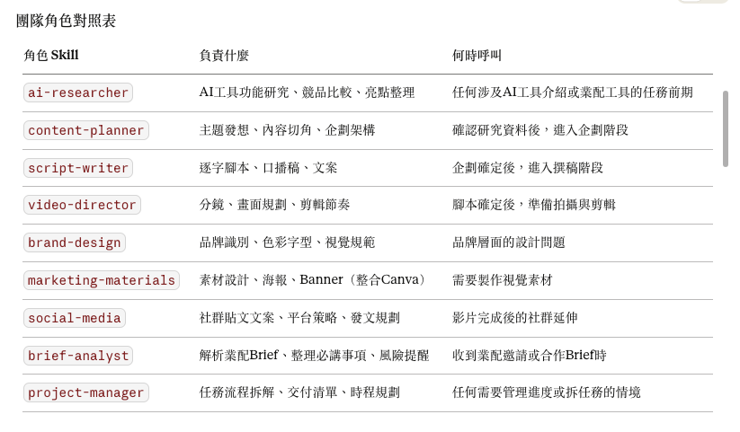

GitHub｜AI Design Team：把 Claude Skills 組成內容創作者的虛擬設計部門
這次的社群觸發點是 Instagram Reel：作者 `alvinnn_0330` 在 2026-07-22 發布短片，文案寫到「連結 Canva Plugin → 指令+生圖 → 直接進 Canva 編輯」，主張可以省下反覆跟 ChatGPT 重下指令的時間。後續補充的 GitHub repo `jinggreen15/ai-design-team` 則提供更完整、可長期引用的實作方向：把 Claude 變成一個由多個角色 Skill 組成的內容製作團隊。
本文將 Instagram 視為「創作者設計自動化需求」的 discovery source；以 GitHub repo 作為 canonical source，並用 Anthropic Agent Skills、Claude Canva Connector、Canva MCP 官方文件查核能力邊界。本文沒有實際安裝 zip plugin、沒有登入 Claude / Canva，也沒有執行 MCP；以下整理限於公開 README、SETUP、SKILL、PDF、zip 結構與官方文件。

核心摘要
`ai-design-team` 的價值不在單一 prompt，而在把「內容創作」拆成可重複呼叫的角色流程：研究、企劃、腳本、分鏡、品牌、素材、社群、Brief 解析與專案管理。這比較接近「創作者個人工作室的 SOP 化」：每個 Skill 負責一段上下游明確的工作，輸出格式能餵給下一個角色。
對欒帥來說，這個 repo 值得收藏的原因是：它示範了如何把一個模糊需求（例如做 AI 工具介紹、業配影片、社群圖文）轉成一組角色化代理流程，而不是每次都從空白對話開始。
Repo 公開資訊（擷取時點：2026-07-27）
| 欄位 | 內容 |
|---|---|
| Repo | `jinggreen15/ai-design-team` |
| 描述 | A multi-role AI design team skill for research, planning, scripting, design, and content production. |
| 建立 / 更新 | created 2026-03-29；updated 2026-07-24；pushed 2026-03-29 |
| 指標 | 約 184 stars、46 forks、0 open issues（會隨時間變動） |
| 授權 | README 標示 MIT License；GitHub API 的 license 欄位為 null，需以 repo 文字說明為準 |
| 主要檔案 | `README.md`、`SETUP.md`、`SKILL.md`、`agents/openai.yaml`、`AI設計部門_說明書.pdf`、`design-department-plugin.zip`、`edit-skills.zip`、`設計部門角色概要.png` |
| 定位 | 針對內容創作者 / AI 工具介紹 / 業配合作影片 / 社群素材製作的 Claude Skill Pack |
角色分工
README 與角色概要圖列出的核心角色如下：
| 角色 Skill | 負責什麼 | 何時呼叫 |
|---|---|---|
| `brief-analyst` | 解析合作 Brief、必講事項、風險提醒 | 收到業配邀請或合作 Brief 時 |
| `ai-researcher` | AI 工具功能研究、競品比較、亮點整理 | 涉及 AI 工具介紹或業配工具的前期 |
| `content-planner` | 主題發想、內容切角、影片架構 | 研究資料確認後進入企劃階段 |
| `script-writer` | 逐字腳本、口播稿、文案 | 企劃確定後進入撰稿 |
| `video-director` | 分鏡、畫面規劃、剪輯節奏 | 腳本確定後準備拍攝與剪輯 |
| `brand-design` | 品牌識別、色彩字型、視覺規範 | 品牌層面的設計問題 |
| `marketing-materials` | 海報、Banner、社群圖文，並可整合 Canva | 需要製作視覺素材時 |
| `social-media` | 社群貼文、平台策略、發文規劃 | 影片完成後的社群延伸 |
| `project-manager` | 任務拆解、交付清單、時程規劃 | 需要管理進度與交付 |
| `creative-director` | 任務分派、創意審核、流程統籌 | 不知道從哪開始或需要整合時 |
README 建議的完整「AI 工具業配影片」流程是：
```text
brief-analyst → ai-researcher → content-planner → script-writer → video-director → social-media → project-manager
```
這讓 repo 的重點從「一個 AI 工具」提升為「內容團隊作業線」。
與 Canva / MCP 的關係
IG Reel 文案強調「連結 Canva Plugin → 指令+生圖 → 直接進 Canva 編輯」；repo README / SETUP 則把 Canva 放在建議 MCP 整合裡，對應 `marketing-materials` 與 `brand-design`。官方查核如下：
- Claude 的 Canva Connector 官方頁標示可從 prompt 搜尋、建立、自動填入、匯出 Canva designs，也提到可瀏覽、摘要、自動填入、建立新 designs、生成 pitch deck、套品牌與設計。
- Canva MCP 官方文件說明，Canva MCP server 可讓 AI assistants 透過自然語言使用 Canva 的設計能力，包含 design generation、design editing、design discovery、asset and brand management、export、comments / feedback workflow。
- Canva MCP 文件也提醒：這是給 IT admins / teams / connector builders 的文件；若是個人使用者連 AI assistant，需要看 Canva Help Center。某些 MCP server allowlist / access 可能需要申請，不能把「任何人立即可完整串接」寫成保證。
因此，這個 repo 裡的 Canva 整合應該理解成「可接上 Canva Connector / MCP 後提升自動化」，而不是 repo 本身直接內建可操作 Canva 的程式碼。
官方 Agent Skills 背景
Anthropic 官方 Agent Skills 文件定義：Skills 是模組化能力，包裝 instructions、metadata 與 optional resources（scripts、templates），Claude 會在相關任務時自動使用。Anthropic 也公開 `anthropics/skills` repo 作為 Agent Skills 範例與標準。
`ai-design-team` 的 `SKILL.md` 很接近這種做法：用一個入口 Skill 描述多個角色，並依任務階段選擇角色；`edit-skills.zip` 則更接近 Claude Skill Pack 的資料夾形態，每個角色有自己的 `SKILL.md` 與 references。
對欒帥可用的實作價值
- **把課程 / 社群 / 業配內容 SOP 化**：每次收到主題，不必從「幫我想內容」開始，而是先跑 brief → research → planner → script → director → social。
- **適合改造成 Hermes / Claude / Codex 共用 Skill 架構**：角色邊界清楚，容易移植成我們自己的課程製作、社群摘要、知識庫文章、簡報生成流程。
- **可當 AI 創作課的教學案例**：讓學生理解「AI Agent 不只是聊天」，也可以是被拆成角色、輸入輸出格式與審核節點的工作流。
- **Canva 整合應放在後段素材生成**：研究與腳本先用文字完成；到 `marketing-materials` / `brand-design` 階段再接 Canva Connector / MCP，避免一開始就把設計工具當成唯一核心。
- **可補一層人類審核 gate**：業配 Brief、法律 / 品牌風險、素材授權、價格承諾、AI 工具功能宣稱，都應在人類確認後再發布。
建議測試路徑
如果要採用，不建議一開始全裝全跑。可以先做最小測試：
- 只取 `creative-director`、`ai-researcher`、`content-planner`、`script-writer` 四個角色。
- 用一個熟悉主題測試，例如「介紹某個 AI 工具給高中 / 大學生」。
- 檢查每個角色輸出是否真的能餵給下一個角色，而不是各自生成一堆不連貫建議。
- 再加 `video-director` 與 `social-media`，看是否能輸出分鏡、短影音 hook、IG / Threads / YouTube Shorts 版本。
- 最後再接 `marketing-materials` / Canva，處理封面、輪播、簡報或 Banner。
限制與注意事項
- 本文未安裝或執行 repo 的 zip plugin，也未驗證 Claude.ai Projects 上傳後的實際觸發效果。
- README 標示 MIT License，但 GitHub API 的 license 欄位為 null；使用或改作前仍建議檢查 repo 是否新增正式 LICENSE 檔。
- `SETUP.md` 提到 Claude.ai Projects 管理自訂 Skill / project instructions；實際 Claude 介面與 Skills 功能會隨 Anthropic 產品版本變動。
- Canva / MCP 能力需視帳號、方案、區域、connector access、Claude / ChatGPT / Cursor 等 host 支援狀態而定。
- Instagram Reel 的「免費版 Canva 也適用」屬作者貼文宣稱；本文未以 Canva 帳號實測免費版限制。
- AI 產出的腳本、設計、業配文案仍需要人類審核，尤其是品牌授權、素材版權、合作揭露與產品功能宣稱。
原始來源
- GitHub repo：https://github.com/jinggreen15/ai-design-team
- Instagram Reel：https://www.instagram.com/reel/DbF8jbxNiE6/
- Anthropic Agent Skills：https://platform.claude.com/docs/en/agents-and-tools/agent-skills/overview
- Anthropic Skills repo：https://github.com/anthropics/skills
- Claude Canva Connector：https://claude.com/connectors/canva
- Canva MCP docs：https://www.canva.dev/docs/mcp/